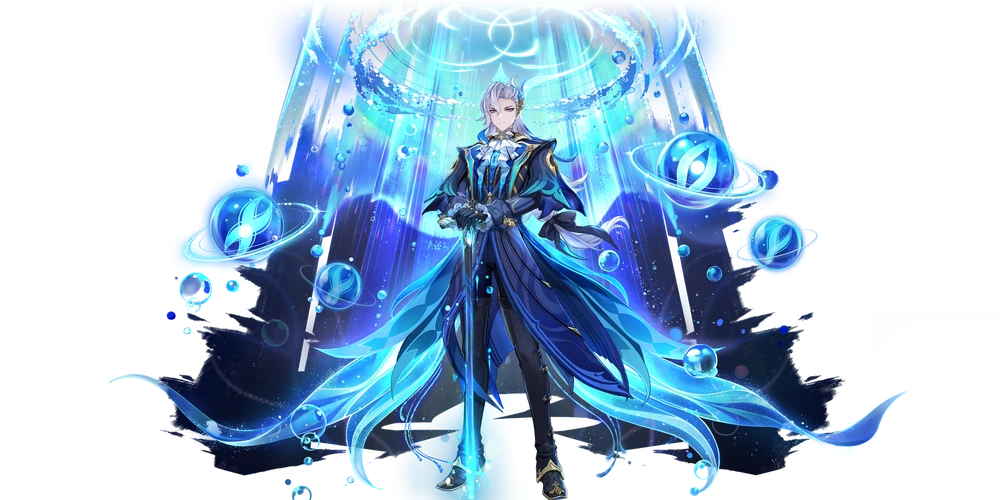
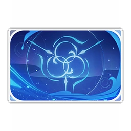

Нёвиллет
 Верховный судья Фонтейна. Выглядит неприступным.
Трудно сказать, то ли у него просто такой характер, то ли потому, что ему есть что скрывать.
Верховный судья Фонтейна. Выглядит неприступным.
Трудно сказать, то ли у него просто такой характер, то ли потому, что ему есть что скрывать.
Регион: Фонтейн
Стихия: Гидро
Оружие: катализатор
Созвездие персонажа
Выпадение персонажа

Карточка персонажа
О персонаже:
Нёвиллет очень одинок. Среди пытавшихся с ним сблизиться жителей Фонтейна все без исключения получали вежливый отказ. По сей день никто не знает даже его имени, поскольку он всегда и всем рекомендует обращаться к нему по фамилии. Он считает, что тесные личные связи могут вызвать сомнения в справедливости его суждений, а он должен быть символом абсолютной беспристрастности. Конечно, некоторых так просто не отвадишь. Они могут сказать: «Да ладно, месье Нёвиллет, не все ведь предстают перед судом, да и вы не вечно будете сидеть в кресле юдекса». Так ли это на самом деле? Если Нёвиллет и знает ответ, он его не раскроет. Может пройти бессчётное время, но однажды речные потоки выйдут из берегов. Все фонтейнцы до единого виновны, и однажды на них обрушатся возмездие и погибель - это не метафора и не фигура речи. Но об этом Нёвиллет никому не может рассказать. Он и в самом деле очень одинок.
История 1(ур др 2):
У Нёвиллета нет личных пристрастий. Любопытствующие представители общественности и журналисты любят разыскивать его в разных уголках Фонтейна, когда он спускается со своего кресла верховного судьи, - появляется ли он в качестве особого гостя на разных представлениях, стоит ли омываемый дождями на берегу под тёмным небом, или прячется в тени от послеполуденного солнца. Одно время люди считали его демоном, существующим лишь для того, чтобы судить других. Нёвиллет был вынужден дать пояснения, суть которых сводилась к следующему: «Я горжусь своими обязанностями судьи и свидетеля, но не являюсь таким уж поклонником судебных процессов. Юдекс - это всего лишь одна из сторон моей личности и один из этапов моей жизни». После этого объяснения часть слухов поутихла, зато появились новые: «Шокирующие новости! Нёвиллет заявляет: должность юдекса для него только трамплин. Идёт ли речь о карьере, или его амбиции простираются ещё дальше?» В этот раз Нёвиллет не стал обращать на слухи внимания... Может, они были истинны, и он не стал исправлять их из принципа? Кто знает? Нёвиллет не большой любитель вина и Фонты, более того, ни одно изысканное блюдо ни разу не заслужило его похвалы. Из-за этого люди стали подозревать, что он попросту не различает вкусы. В ответ Нёвиллет организовал салонную дегустацию воды, на которой ошеломил всех разнообразием вкусов воды из разных регионов и собственной взыскательностью. Конечно, никто не знает, насколько он при этом был искренним. Всё-таки Нёвиллет славится отсутствием личных пристрастий.
История 2(ур др 3):
Нёвиллет справедлив. Если бы не это, он никогда бы не занял пост юдекса. Детям может показаться, что вся работа человека в судейском кресле сводится к тому, чтобы, надев парик, поддерживать порядок во время слушаний и озвучивать решения Оратрис. На самом же деле юдекс должен в частном порядке решать множество административных дел, чтобы система правосудия работала, как должно. По традиции, юдекс в Фонтейне также может лично исполнять закон и инициировать расследования. Когда-то это было сделано, чтобы облегчить исполнение закона во времена беспорядков. После развития правовой системы это установление, скорее отражающее дух первопроходцев, чем верность духу законности, сохраняется лишь символически. Если юдекс лично ведёт расследование или выступает в роли обвинителя, он должен взять самоотвод как судья и попросить кого-то другого занять его место. В тех немногих случаях, когда Нёвиллет лично расследовал дела, он неукоснительно следовал этому правилу. Однако следует отметить, что уже очень долгое время Нёвиллет является единственным юдексом Фонтейна - люди даже предполагают, что своим долголетием он обязан благосклонности богов. Хорошо, что он так справедлив, иначе этот большой срок исполнения обязанностей непременно создал бы проблемы. Что же до того, что именно он собой представляет - чьего-то фамильяра или загадочное порождение Гидро - люди строят немало догадок, но Нёвиллет никогда не комментирует ни одну из них и ни одной не отдаёт предпочтения. Всё же он непревзойдённо справедлив.
История 3(ур др 4):
В силу разных причин в законах Фонтейна есть немало странных пунктов. Нёвиллет не остался в стороне, включив в их число следующую статью: «по отношению к мелюзинам следует использовать местоимение "она", а не "оно"». На первый взгляд закон кажется странным, но если вдуматься, в нём есть смысл. Мелюзины сейчас украшают собой самые разные области жизни в Фонтейне, и в борьбе за их права указание использовать правильные местоимения даёт ясный сигнал. Фонтейнцы заметили, что Нёвиллет относится к мелюзинам куда мягче, чем к людям. Они решили, что подавляемая им доброта нашла выход в форме отцовской любви к этим созданиям. Это предположение может показаться разумным на первый взгляд, но для тех, кто хорошо знает Нёвиллета, оно выглядит довольно странным. Нёвиллет - Дракон воды. Он определённо считает мелюзин своими фамильярами и сородичами - новым, более совершенным видом вишапов. Но ведь в то же время он - сотрясатель нынешнего мирового порядка, несущий кару богам, враг человечества. Зачем же ему бороться за обретение мелюзинами равных прав с людьми? Подобный вопрос могли задать ему только вы. И он ответил: «Просто мелюзинам больше нравится жить с людьми. Тут уж ничего не поделать».
История 4(ур др 5):
Нёвиллет больше любит дождливую погоду, чем солнечную. Влажный воздух даёт ему вдохнуть полной грудью. Но он долго не мок как следует под дождём. Словно бы с тех пор, как он решил соединить судьбу с Фонтейном, Нёвиллет выбрал для себя маску обычного человека, скрупулёзно следующего правилам. А обычные люди не выходят под дождь без зонта, давая дождевым струям вольно сбегать по мокрым волосам. Стоит заметить, что юдекс - его естественная роль, Дракон воды - истинная природа, и только «обычный человек» всего лишь маска. Из-за одиночества и стыда люди создали карающих божеств, из-за жадности и стыда - божеств-спасителей. В отсутствие божества эти ожидания легли на Нёвиллета. После вынесения человечеству оправдательного приговора он вернулся к своим естественным манерам. Теперь он наконец-то мог выйти под дождь и как следует промокнуть. И Нёвиллет и правда воплотил это в жизнь. Стоя под дождём, он спокойно глядел вдаль, вспоминая давний день, когда он получил письмо. Простое письмо. Неизвестно как оно было отправлено прямо Нёвиллету в руки. Строка получателя была оставлена пустой, в тексте же автор прямо обращался «к тебе». Тебе особенному, тебе, ни на кого не похожему. Нёвиллет не был против этого, но и не соглашался. Ему смутно казалось, что власти предержащие этого мира не вправе выносить о нём подобные суждения. Он знал, что письмо пришло от Архонта Фокалорс. Она приглашала его посмотреть Фонтейн и утверждала: «В зрительном зале величайшего театра я оставлю для тебя место с наилучшим обзором». Позднее Нёвиллет и правда получил это место. В переднем ряду оперного театра «Эпиклез» на острове Эриний. Оттуда он смог полюбоваться на самые разные представления. Как и обещала Фокалорс, у него был отличный обзор. Дальнейшие события не получили широкой огласки, и люди, кажется, толком не поняли, что именно обозначает крушение трона Архонта и возвращение силы Гидро её изначальному владельцу. А уж помилование - и почему оно вообще понадобилось - история ещё более грандиозная и ещё более запутанная. Как бы то ни было, занавес пал. Закончилась величайшая в истории Фонтейна пьеса. Закончилась ли? К этому моменту Нёвиллету стало ясно, что в письме Фокалорс речь шла не просто о кресле в театре. Фокалорс, или же Фурина, уступив ему место среди зрителей, в одиночку вышла на сцену, став главным персонажем пьесы. Но число мест предустановлено заранее, и если кто-то занимает место, другой должен его покинуть. То письмо оказалось приглашением на сотни лет вперёд. Как ты чувствуешь себя среди зрителей-людей, о Дракон воды? Нравятся ли тебе человеческие драмы?
История 5(ур др 6):
Столь великому созданию, как он, не требовалось сияние освещающего его «созвездия судьбы». Ведь «судьба» - это всего лишь игра, в которую управители мира играют с живыми существами. Он же вернул себе одну седьмую часть власти над миром, трон и титул совершенного дракона. Он стал независим от мира людей, и с точки зрения здравого смысла ему больше не требовалось участвовать в играх «судьбы». Он видел, как на небосводе «судьбы» светила переплетаются, образуя сложный и хрупкий мир. Изначально его не волновало, что приукрашенные словесами о божественном порядке нити, на которых подвешены эти марионетки, однажды поглотит пламя. Вот только, как выяснилось, цветистые слова способны убедить и его. «Просто понаблюдай за жителями Фонтейна. Они ведь тоже родились из вод Первозданного моря, а значит, относятся к исконным жителям этой планеты, о которых ты должен заботиться». Он ни за что бы не признал этого, но его заворожили картины людских печалей и радостей. В оправдание он сказал бы, что и людей завораживает зрелище ряби, расходящейся по поверхности воды от капель дождя. Он пояснил бы: владыка Нибелунг был неправ - только объединившись, живое может дать отпор беспросветному небытию. В конце концов он стал частью узора «судьбы». Небо отвело ему особое почётное место на своём своде - предназначенное лишь для управителей и равных соперников мира, его собственное отражение. Вот только почему его созвездие - огромный дракон-левиафан, ведь он с рождения имеет облик человека? Возможно, дело тут совсем не в судьбах мира: в роли Нёвиллета мелюзины (особенно Сиджвин) нередко атакуют его, открыв колонку гороскопов в «Паровой птице» или сумерские астрологические справочники. Не может ведь Нёвиллет сказать им, что у него нет созвездия или же что его созвездие называется «Нёвиллет»?
Фонтейнская присказка
«Гидро дракон, Гидро дракон, не плачь!» Никто не знает, кто и когда придумал эту детскую кричалку, но она легко распространилась по всему Фонтейну. Нёвиллет и сам был весьма этим озадачен. Хотя он провёл немало времени с фонтейнцами, он всё ещё не мог понять, как люди относятся к нему настоящему - Дракону воды. Гидро дракон не только властвовал над водной стихией, когда-то он был властелином изначального моря. До появления пришедших извне форм жизни всё живое на планете брало начало из этого моря. Последующие поколения людей не зря назвали эту сокровенную акваторию «Первозданным морем». Гидро дракон же был фактически первым «богом жизни» на планете. Разумеется, Нёвиллету это известно так же достоверно, как то, что все реки рано или поздно впадают в море. Может, для людей вода Первозданного моря и не имеет особого значения, но Нёвиллет в состоянии различить каждую каплю содержащихся в ней мельчайших воспоминаний. Он всё ещё помнит, как явившийся извне узурпатор назначил собственное божество жизни управлять всем живым. Он помнит, как тиран создал «её», чтобы подавить изначальную жизненную силу планеты. И конечно, Нёвиллет знает, как «она» совершила тот первородный грех... Дойдя до этой мысли в своих размышлениях, Нёвиллет решил, что автор кричалки и фонтейнцы в целом ничего не понимают про Дракона воды, раз полагают, будто бы он способен плакать. За кого они принимают Гидро дракона - за добряка, скорбящего равно о людях и небесах?
Глаз Бога(ур др 6):
Чтобы управлять силой стихии, Нёвиллету не нужен Глаз Бога. Но кое-что он узнал только тогда, когда обрёл совершенную форму: из-за полученных в войне возмездия ран узурпатор утратил часть функций и уже не мог подавить мировой порядок на основе одной лишь собственной абсолютной власти. Чтобы усмирить непокорный и разгневанный мир, тиран вместе с ещё одним пришельцем извне создал Сердца Бога. Таким стал установленный в мире порядок, и людям остались лишь эти семь воспоминаний, а все разрозненные части изначального целого были приведены в движение, чтобы поглотить друг друга. С того дня, когда страстное желание человека достигало небес, семь управителей материального мира должны были вручить ему дар. Хотя им и неизвестно было, чьё и какое именно желание достигло божественных пределов, семь божеств всё равно должны были отдать этому человеку фрагмент своего господства. А после того как одаренный человек исполнял миссию... божества получали взамен куда более щедрый дар. Хотя Нёвиллет вовсе не собирался подчиняться божественным установлениям, он признавал волю людей. Он тоже предназначил в дар часть себя, словно легендарное сокровище драконов, и ждал, когда какой-нибудь смельчак попробует его получить.